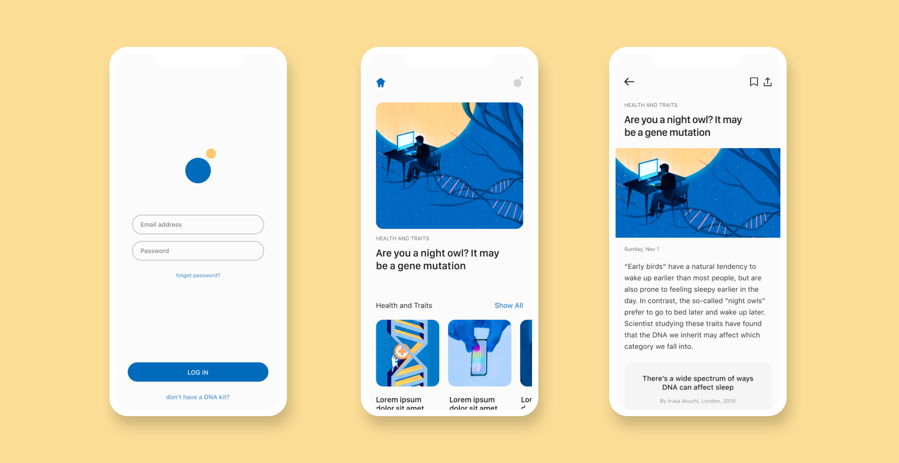

Insight
Gen Z are becoming young adults who are constantly shaping their own identities and individual traits. Receiving information from DNA test results allows them to learn and discover a better sense of themselves.
Ask Gene
Gen Z are becoming young adults who are constantly shaping their own identities and individual traits. Receiving information from DNA test results allows them to learn and discover a better sense of themselves.

MIT Technology Review estimates that in 2019, about 26 million testing kits were bought so far, with some projecting that within 2-years number could skyrocket to 100 million.

Ask Gene combines the voice technology with the analyzation of user's DNA results to provide more engaging and less time consuming experience to discover what makes them uniquely them.
